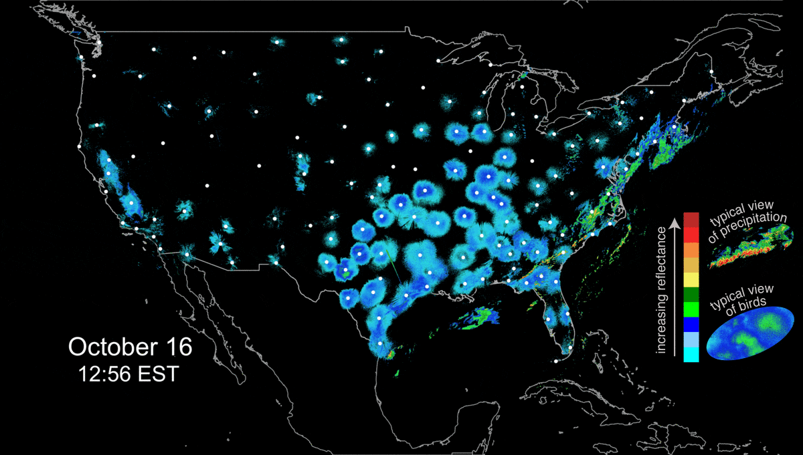
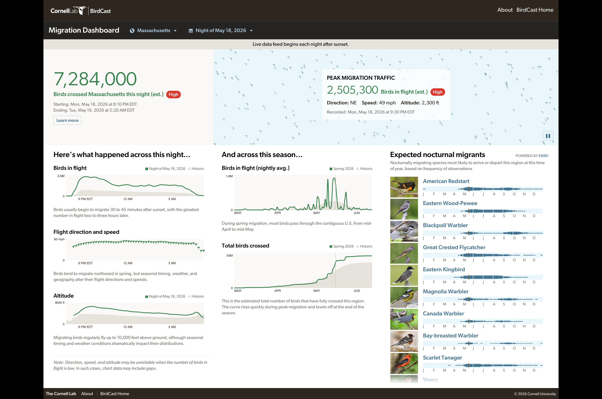
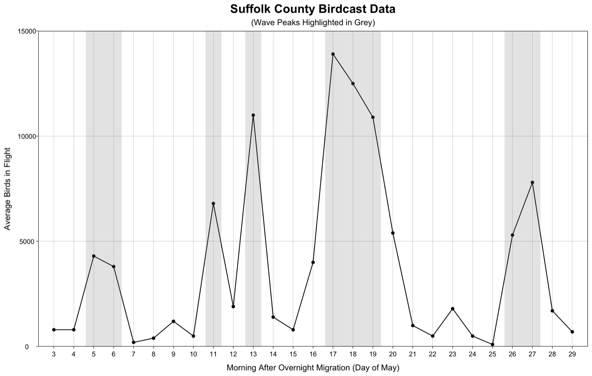
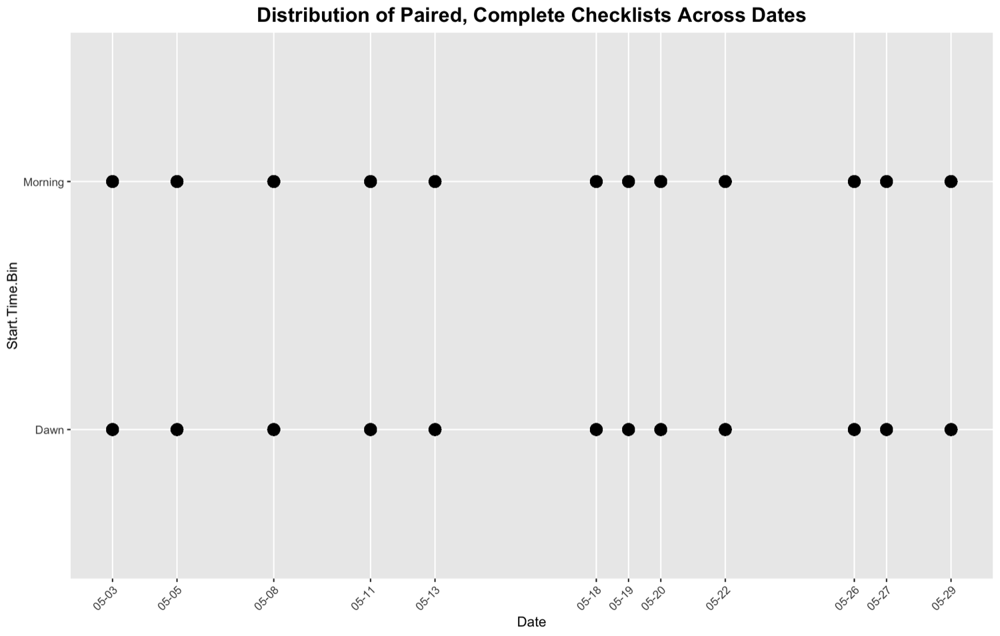
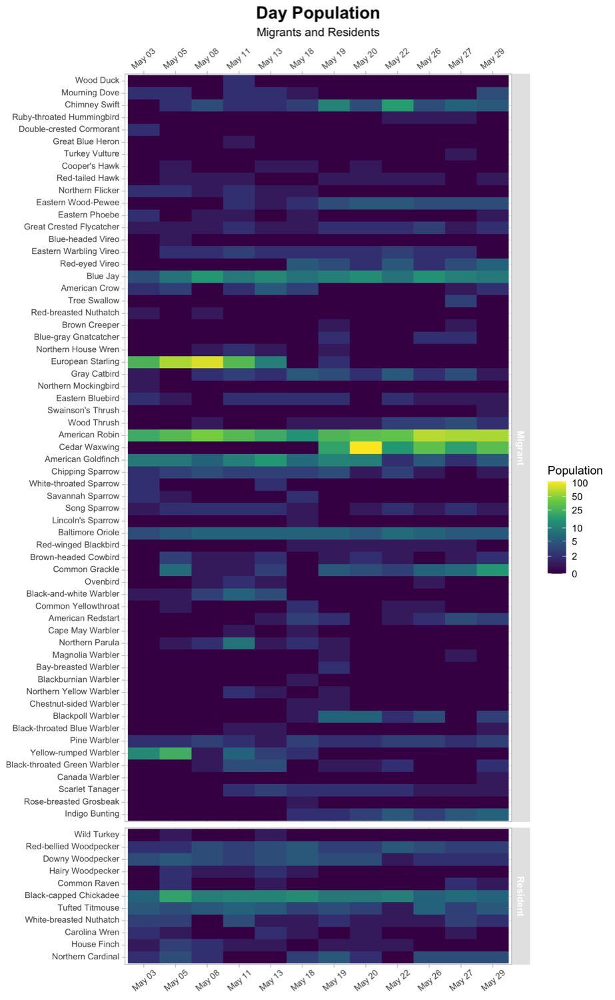
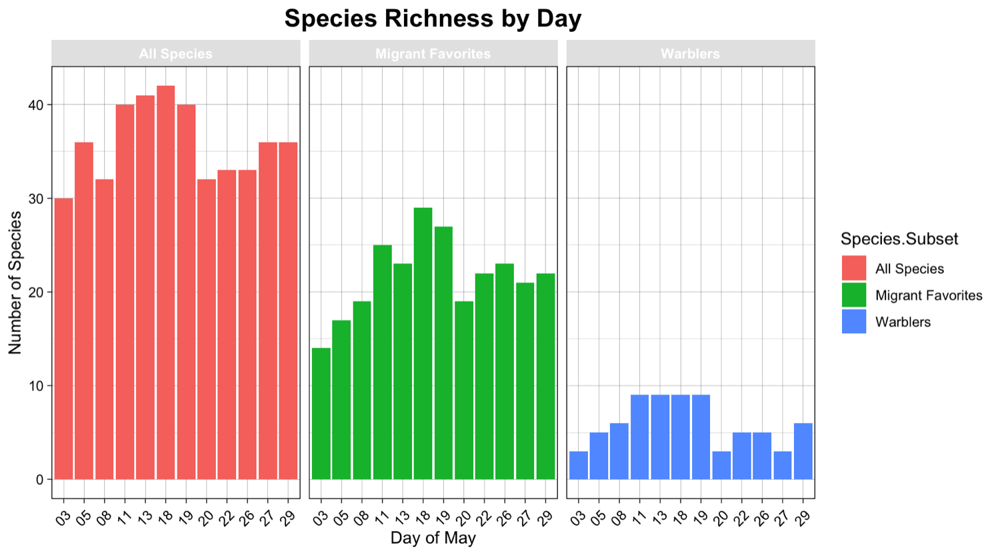

Chase the waves
I checked birdcast every night. If large numbers were in flight, I packed my bag and went to bed early.
Spring Migration Experiment · story site v2.2
Twelve mornings at one Massachusetts woodland, read against the overnight migration passing above it.
The question
The best part about migration (in my opinion) isn't the number of birds, it's the diversity. X species fly to (or through) Massachusetts during April and May from as far as Brazil. But it's not as simple as going out any morning and seeing flocks of new arrivals -- they migrate in waves at night, the timing based on weather conditions (favorable wind, clear skies). The timing also varies for every species, with some species instinctively starting their journey earlier (in April), and others later (mid-May).
So birding during migration is also a game of which day to go, based on how many birds flew in the night before (tracked on Birdcast, more on that later) and which species are likely to be on the move.
And then there's the element of change. You never know what you'll see (or not see). If I really want to see Northern Parulas (zeezoos, as my husband and I call them; see video below with audio), I would go the first two weeks of May. I might see 5 parulas, 1 parula, or no parulas. On the other hand I might see no parulas, but an unexpected, uncommon, early arriving Blackburnian warbler might make an appearance (see the spectacularly orange bird below).
According to every birder I've ever met, every birding resource, the best time to go birding is at dawn. This is when the birds are the easiest to spot: they're moving around catching breakfast, and singing to greet the day. During migration, the starving birds are landing after a night of flying, desperate for food, and the males singing to establish territory (or impress a lady bird).
The problem is, I hate mornings. And if there's one thing I hate more than waking up in the morning, it's waking up at the break of dawn.
Tracking live bird migration
Birds migrate at night by the thousands, tens of thousands, hundreds of thousands (or at least most do -- They come in waves, weather pending. Birdcast partners with meteorologists to monitor and predict major flight nights. Cities use this to know which nights to reduce light pollution that draws a billion birds a year to their deaths by window collisions. Birders use this to know when birds are on the move (and go birding the next morning). I used this to choose mornings when I knew new-comers were landing in my area, tired and hungry and singing for mates.
(the pulsing blue and green circles) and precipitation (the flaky green/yellow/orange around Florida and the East Coast), which you'll likely recognize.
Each white dot is a radar station. The bird movement pulses in circles because the radar detects outward from its stationary point.


You can select any state or county and watch the numbers update live as the birds travel. They can estimate the number of birds currently in flight, total crossed so far, average speed and direction (typically ~20-30mph, but can reach 60mph), and altitude (averaging 1000-1500ft, reaching up to 10,000ft).
You can also see a summary of the movement that has occured so far that season.
The green lines are actual measurements, the grey are historical averages. The averages are not "typical" in the sense that they are much, much smoother than reality. The real measurements are bumpy, even with huge peaks and valleys in the Birds in Flight graph. This is because this noise happens on different days every year, and the historical average smoothes it out.

Regional context
I pulled this data from the Birdcast Dashboard for my county.
ADD APPROPRIATE BIRDCAST CITATION. ALSO I NEED TO UNDERSTAND "AVG BIRDS IN FLIGHT BETTER", OR SWITCH TO TOTAL

Study design
I checked birdcast every night. If large numbers were in flight, I packed my bag and went to bed early.
For the most comparable timepoints, I collected my dawn (~6am) and morning (~9am) observations on the same day.
It's pretty standard practice that if you can recognize a bird by ear, you should count it too. For the sake of simplicity, I will refer to all these identifications as "seeing" a bird, even though technically many I heard only.
[I used Sound ID on Merlin to double check myself or bring my attention to birds I missed at first. I never relied on it if I didn't already feel confident in my own judgement.]
These are the days I went birding. Most of them were chosen the night before when I saw on Birdcast.org that it was going to be a high migration night, with new species likely arriving the next morning.

[Testing out explanation for non-science audience] By going twice on the same day, I know I'm dealing with the SAME birds from the SAME wave (or one that were already here). That way I can conclude that any differences between the 6am and 9am checklist were because of the TIME, not mixed up with different batches of birds. In science parlance, I would say I'm "controlling for" day-to-day population differences by "holding date constant" (both timepoints on the same day). This is also "eliminating confounding variables"
Local observations
Claude filling in, TO EDIT: Each checklist logs a "Count" for a species — how many I tallied on that one outing. Most days I went out twice (6am and 9am), so a day can have two counts for the same species. "Population" is the max of those same-day counts, not the sum: the higher checklist almost certainly saw most or all of the individuals the lower one did, so adding them would double-count the same birds. Population is what every chart in this site plots.
What's a heatmap?(plus some observations)
The graph below is called a heatmap. Each row represents one species, each column is a day of the month (the "map"). The number of birds I saw is represented by a color gradient (the "heat"), from purple as 0 birds to yellow as 100 birds. So, every species for each day has a single square, and the color represents HOW MANY of that species I saw on that day.
The heatmap is also divided into migrants (the larger, top portion) and residents (the bottom 11 species). DOUBLE CHECK HOW EBIRD DECIDED ON THESE DIVISIONS.
Pick a row (a species) and skim the change in color from left to right. This tells you how many of that kind of bird I saw over the course of the month. Do you notice any patterns?
Some birds you'll notice a lot of purple, with a couple light purple squares (like the Wood Duck in row 1, or Ruby-throated Hummingbird in row 4). These birds I only saw a few times. These birds are generally uncommon or found in other habitats. It's harder to draw conclusions about these due to lack of data.
Other birds will have more or less the same color across the whole month. The Blue Jay (the first mostly-green row) I saw in relatively high numbers (~10), consistently throughout the month. The high counts make sense because Blue Jays are very common, make a lot of noise (so they're hard to miss), and often travel in groups (so I see multiple at a time). The consistency over the month makes sense because despite not technically being "residents" (WHY???), they are present year-round, rather than arriving suddenly.
List of quick observations:
Some birds are more or less there year-round (including some "migrant" status birds), and constant during my observations -- blue jay, red belly woodpecker
Some birds are year-round but drop off during my observations -- these are likely nesting (robins)
Some birds look constant, but are actually migrants who arrived before I started my experiment, and stay to breed (pine warbler, baltimore oriole)
Some birds arrived during the course of my study and stayed (they breed in MA) -- eastern wood-pewee, chimney swift
Some birds are just passing through (many warblers), arriving earlier in the month (or before my experiment started), or mid-month.
If I could redo this study next year, I would start it a couple weeks earlier, and end it a couple weeks later. As it stands, much of the shape of migration is missing. What looks flat and constant in the heat map is actually missing information on the early arrivals and later departures.

Species Richness
All three subsets peak on May 18, and are an approximate plateau for May 11-19. I divided into subsets because some sightings in "All Species" include very common birds I see all the time. So in practical terms, I'm more interested in the species diversity particularly among my favorite migrants.
Of the three groups "Migrant Favorites" has the greatest absolute increase in number of species from the beginning to the peak (14 to 29, or +15). The warblers have the greatest relative increase (tripling from 3 to 9), but smaller numbers have higher relative increase when the absolute increase is minimal (only +6).

Go deeper
Who do you want to learn more about? The warblers? Rose's 18 favorite birds? Or shall you walk through each wave one by one?
Interpretation
FACTS
MORE FACTS
AGAIN MORE FACTS
Data & tools
Personal eBird checklists (de-identified), eBird Status & Trends regional abundance via ebirdst, and BirdCast nocturnal migration estimates for Suffolk County.
R, with tidyverse, auk, ebirdst, ggridges, patchwork, terra and tigris. Figures generated directly from the analysis notebook.
Every eBird submission ID was replaced with an arbitrary code before publication, and location data finer than state level was removed. The study site is referred to only as "Local Park."